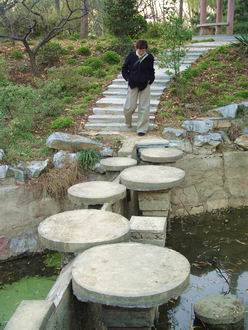
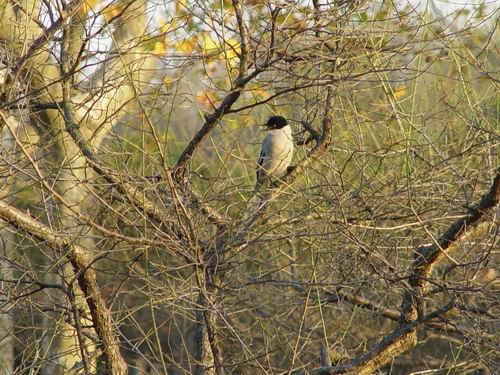
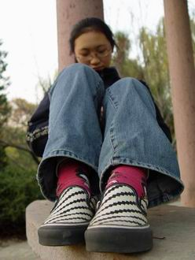

短暂恋情的长诗 @ Dec 07, 2004

这世上最短的情诗
就是“爱”这一个字而这世上最长的情诗
就是将“爱”这个字写上百万次
就算在尚未写完时已经齿摇发白那绝不是诗的错
因为人生总是比诗要短一些
这世上最短的情诗
就是“爱”这一个字而这世上最长的情诗
就是将“爱”这个字写上百万次
就算在尚未写完时已经齿摇发白那绝不是诗的错
因为人生总是比诗要短一些
 Shot by Christina
Sony Dsc-P5
Shot by Christina
Sony Dsc-P5
去朋友讲的店里帮公司买些演出的化妆品，那些漂亮的韩国眼影和假睫毛真让人心动。最最年轻的时候坚持不化妆原则，开始臭美的年纪却仅是化化眼线和口红......现在想起来有些遗憾，那个年纪正是可以大胆尝试各种色彩和服饰别人也不会觉得过分的阶段，如今已经一去不复返了？！
上午央视台重播上周的《对话》，主持人提出一个问题：我的一个朋友32岁了，目前工作的不快乐，缺乏激情和热情，既无动力也无发展前景，如果是你，你会选择以下哪些方法去解决？1、跳槽；2、创业；3、充电。大多数场内观众选择创业，外国嘉宾则认为如果有足够的钱、有自信心，可以选择自己喜欢的事物去充电，他认为创业的人群中只有1%成功了，相对风险较大。
无意间看到这样一则小文：“要深入了解一个人，有的时候并不需要和他相处很长时间才做得到。在一些小细节上，自然界的造物主已经向我们泄露了天机。低头观察一下你的左手吧（或者看你男朋友的也行），你能发现一些有趣的秘密！我们的左手无名指代表了我们对性的态度。如果你的无名指比你的食指长，说明你对性的需求比较高，如果反之，则说明你对这个无所谓。为什么呢？因为左手无名指的生长本来就是受性激素所影响的。”
哇！我的无名指......
这两天的南京阳光明媚，我的生活节奏如此的慢，太阳的光热却无从感觉感受，只能在周末的落地窗前小憩片刻。阳光下的满足，这日子......
***********************************************************************
中午出去时又遇见马路上挖坑的施工队，这是南京一大特点，这边心情极好的行驶在刚刚修好的马路上，没几天这边挖呀那边挖的，给马路装上拉链似乎也来不及，更可气的是补好的马路上很明显的大补丁小补丁。早前看到《南京晨报》上有篇关于南京城市形象的问卷调查报道：9成市民热望提升南京形象。
记者访问—在读研究生：“南京人给人的感觉是没有斗志，太容易满足，缺乏上进心，“那种慵懒的感觉看起来活得很舒适，实际上封杀了一个城市前进的步伐。作为六朝古都，南京已经丢掉了太多的东西，破坏了太多的东西，象明城墙、中山陵被砍伐的树木等等。”
中北集团员工陈先生：“用庸俗来形容南京以及南京人现在的状态，最明显的表现是“在公共场所经常可以看到开口骂人的市民，让人感觉有的市民素质很差。一个城市要发展，它的人文的东西一定要保留下来，在这个前提下，其他东西可以尽情发展。”
71岁退休的王先生：“南京现在搞的是‘四不象’，东学一点，西学一点，反而没有自己的东西了。而周边的苏州等城市，外地人一下车就能感觉到当地的特有味道。计划经济转型时期，一些建设的展开和较快的速度期望是必然的，我们可以对此表示理解，但是在这个过程中却破坏了城市原有的一些东西，比如说南京的老城保护，这一点绝比不上西安。”老人认为南京的古城味不应该丢掉。
下班等他来接我已是晚上7点多钟，初冬的南京夜晚并无透骨的凉，只是那风飕飕地便钻进衣服里了。我时而快乐时而烦躁着，与对他的期盼一样。很明显我们之间的交流多于以往，这使得我们的心可以靠的更近。在这样的季节里，可以彼此取暖宽慰心神。
前日在南师大附近的音像店里买了尹建的韩语歌曲CD，终日携带这张CD往返于家、公司、车之间，只要有条件播放音乐便不嫌麻烦地拿出来听听。事实上我不过是希望保持听这张CD时的心情，可以保持一段时间也好。现在的我越来越语言贫乏，食欲却大大的好起来，因为这个居然有人在MSN上跟我挤眉弄眼了一番。
整个大厦的空调还没启动，自然无法继续午睡，有些无聊的中午便踱步到附近的小超市买些热巧克力冲饮和饼干，路过路边摊时又看见那只憨厚可爱的可卡犬“艾莉”，吹着口哨上前唤她，她的眼神似乎不大灵光了，只是顺着声音朝我抬起脑袋晃动着剪得不太标准的短尾巴，缓慢地迎着我走过来坐下。我轻轻抚摩着她的脑袋，轻呼着“艾莉”，她那时的神情让我感到快乐和心疼。早晨上班开车路过时常看见艾莉在卖早点的摊子前聚精会神地望着热气腾腾的美味。书上说可卡是极富表情的犬种，在妞妞和艾莉的身上我得到了强烈的认同感，她们的眼睛会说话，和我们中间一部分人的“死鱼眼睛”比起来要充满感情的多。
艾莉现在的主人是开快餐店的老板，艾莉刚刚生完BABE时被原先的主人嫌弃，于是经常流浪在快餐店附近。老板喂过几次食物给艾莉吃，渐渐地艾莉就呆在快餐店里了。老板说艾莉刚来他们这里的时候非常瘦，现在的艾莉胖得象头小猪，走路一晃一晃的。但是艾莉的卫生状况不太好，耳朵上的毛已经打结，眼睛混沌不堪，我一有机会就要叮嘱快餐店的伙计帮艾莉点眼药水。
这世上没有不好的狗，只有不懂狗的主人。人类把自己愚昧无知故而无能解决的问题都推卸到狗狗身上，并以此为理由遗弃他们。狗狗无私的爱也得不到人类从始至终地关怀和照顾，一个微弱的生命却带给了我们许多的欢声笑语。令人无奈而苦涩地是我父母在2003年4月非典时期收养的流浪狗果果，今年春夏交替时怀孕，即将分娩前被人偷走，这无非和钱有关，果果肚子里的BABE是被偷盗的主要原因。非典时周围邻居没有一家人敢收养流着鼻涕的果果。流浪过的狗狗很懂事很惜福。有的朋友总是询问我为什么不让妞妞生育的问题，指责这是违背天性......其实我考虑的是妞妞的BABE是否能得到一生很好的照顾？这个世界如此悲凉和残酷，还有什么可以让我们相信人性？不要再继续制造悲情故事了......

Sexo caliente, sexo frio
by joan mateu i font
Canon 1 Ds
文明世界有文明世界的游戏规则。玩笑也好幽默也好不管是高尚是下流都是事先在家里炮制好的，如同端上筵席的一道道菜。玩笑和幽默并不高明不是说的人缺乏知识而是他没有随机应变的智慧，正如不是菜做的不好而是上菜时把顺序搞错了。你说你欣赏我的举动但并不欣赏我讲话的内容。相反，你非常讨厌。我通篇讲话说穿了不过是一则征求做爱的广告。
你说“讨厌”这个词时好象很愤慨，但我从你眼睛中看出你实际上在撒娇，并不“讨厌”。你正在力图使自己变成一个女人，象西方的狗和猫跑进森林，要咬人要捉老鼠一样。作为一个女人你实在懂得太多因而活得更累。知识本来就是人的负担。
我想帮你卸下负担于是我顺从你说。我说我也知道我刚刚是哗众取宠，但真正的学问是说不出口的。最宝贵的东西是人内心的体验只让它深深地埋藏于内心，千万别说出口。世界上的真理都无法证明，凡是能说得一清二楚的道理都是掺着假。与其一本正经地说半真半假的话不如把一点内心体验嵌在玩笑里。
把世界看透了以后你就分不清是悲观好还是乐观好，我就是我！你却说在乐观主义者和悲观主义者之间你还是喜欢后者。你还说只有悲观主义者才有宽容的胸怀譬如菩萨，菩萨就把人生看作一个大苦痛。我说菩萨悲观和乐观得彻底就表现在它的沉默，它看见了听见了体验到了却什么都不说。
你深感到自己必须回到野蛮状态中去，使自己恢复成一个真正的女人。你说男人聚在一起总喜欢讨厌地谈女人，然而男人们其实并不理解女人，真正理解女人的是女人自己。我辩解说不尽然，女人并不理解女人正如男人并不理解男人，理解女人的恰恰是男人中真正懂事的那一小部分，与理解男人的恰恰是女人中真正懂事的那一少部分相同。
我现在都将我们说过的话忘却了是因为我们当时的语言游戏并不重要。语言只是手杖，借着它我们一同携手走进一个黑洞。
那时你的眼睛象加了过多牛奶的咖啡那样温柔，纯粹是一对女人的眼睛。
我当然喜欢喝更好的咖啡。
我爱南京的东郊。 除此之外这儿还有什么能让我喜欢？ 妈妈出生的如意里？还是她小时侯生活玩耍的总统府一带？ 这种没有归属感的状况在东郊总能解决的很好。 上个周末和姐姐、外甥女又去了...... 这天，微冷的天，有成群的鸟儿在林间飞翔。
Shot by Sony F717








和朋友去别的外贸公司看衣服，顺便想买点价廉物美的样品。没想到那个部门的经理居然是前男友Y原来住址的对门邻居。我一点印象都没有，他却认出了我，好象他对几年前的历史比当事人还记忆犹新，面色微红的一连说了好几个“可惜了，可惜了......”
《SEX AND THE CITY》有一集讲CARRY和一个家具设计师相识相爱，CARRY对这种不需要经过磨合就能达成默契和融洽的关系感到困惑，她认为一定有什么问题存在，不然怎么会一点问题和矛盾都没有呢？这就好象快乐有了艰难困苦的体验，才具有令人珍惜和回味的心态。当时我决意离开...也是这种心理的驱使。
有谁能和他们曾经深爱过的人成为哪怕只是说说话的朋友？
他不能，我亦不能。
现实生活中我们彼此遗忘了......

第一次约会我们在天桥上看人来人往，看车水马龙...夜晚的天桥霓虹闪烁。
昆明干燥的气候开始折磨我的皮肤，瘙痒使睡眠越来越糟糕，晚上只好看书直到眼皮塌下，最近看的是周国平的自选集。喜欢有的文章是因为我的思想历程和他有点相象，特别是在文革时读书的感受。现在的年轻人很难想象当时那代人对书籍的渴求是多么强烈。
顺便将他下面这篇文字BLOGGING，作为父母，我们对孩子是不是也应该这样呢？
人们常常说，人与人之间，尤其相爱的人之间，应该互相了解和理解，最好做到彼此透明、心心相印。史怀哲却在《我的青少年时代》中说，这是不可能的，即使可能，任何人也无权对别人提出这样的要求。“不仅存在着肉体上的羞耻，还存在着精神上的羞耻，我们应该尊重它。心灵也有其外衣，我们不应该脱掉它。”如同对于上帝的神秘一样，对于他人灵魂的神秘，我们同样不能像看一本属于自已的书那样去阅读和认识，而只能给予爱和信任。每个人对于别人来说都是一个秘密，我们应该顺应这个事实。相爱的人们也只是“在黑暗中并肩行走”，所能做到的仅是各自努力追求心中的光明，并互相感觉到这种努力，互相鼓励，而“不需要注视别人和脸和探视别人的心灵。”
读着这些精彩无比的议论，我无言而折服，它们使我瞥见了史怀哲的“敬畏生命”伦理学的深度。凡是有着深刻而丰富的内心生活的人，必然会深知一切精神事物的神秘性并对之充满敬畏之情，史怀哲就是这样一个人。在他看来，一切生命现象都是世界某种神秘的精神本质的显现，由此他提出了敬畏一切生命的主张。在一切生命现象中，尤以人的心灵生活最接近世界的这种精神本质。因而，他认为对敬畏世界之神秘本质的人来说，“敬畏他人的精神本质”乃是不言而喻的事情。
以互相理解为人际关系的鹄的，其根源就在于不懂得人的心灵生活的神秘性。按照这一思路，人们一方面非常看重别人是否理解自已，甚至公开索取理解。至少在性爱中，索取理解似乎成了一种最正当的行为，而指责对方不理解自已则成了最严厉的谴责，有时候还被用做破裂前的最后通牒。另一方面，人们又非常踊跃地要求理解别人，甚至以此名义强迫别人袒露内心的一切，一旦遭到拒绝，便斥之以缺乏信任。在爱情中，在亲情中，在其他较亲密的交往中，这种因强求理解和被理解而造成的有声或无声的战争，我们见得还少吗？可是，仔细想想，我们对自已又真正理解了多少？一个人懂得自已理解自已之困难，他就不会强求别人完全理解自已，也不会奢望自已完全理解别人。
在最内在的精神生活中，我们每个人都是孤独的，爱并不能消除这种孤独，但正因为由已及人地领悟到了别人的孤独，我们的内心才会对别人充满最诚挚的爱。我们在黑暗中并肩而行，走在各自朝圣路上，无法知道是否走向同一样圣地，因为我们无法向别人甚至向自已说清心中的圣地究竟是怎样的。然而，同样的朝圣热情使我们相信，也许存在着同一个圣地。作为有灵魂的存在物，人的伟大和悲壮尽在于此了。
（来自乌鸦嘴）

next stop, vancouver
canon powershot s30
Posted by MOKO说话**
echo穿着长长的白色羽绒服，我穿了夸张的毛领大衣，两个人在隐藏着阳光的温暖午后，各自躲在与天气不相称的外套里。相视而笑。
她递过来《清醒纪》，安妮的新书。
当离别近在眼前，我便怂恿了自己放弃购买这本书，已经有那么多带不走的东西，总不愿再多落下些什么。
可是，她还是把它送给了我。
扉页上写着：我们要有一颗淡定的心。
要经历过多少才能明白什么是真正的淡定呢？
答案不在手中，它在旅行箱里。
离南京60公里左右的大吉温泉度假村。我们包了两栋别墅，共16个房间。每栋别墅每晚3000RMB，另租住主楼公寓式房间若干。那里有温泉泳池、网球、羽毛球场、篮球场，很壮观的桂花树园、卡丁车场、垂钓、桑那浴等等活动的项目和场所，总之适合腐败。据说是私人投资开放的，强！（为了方便带了一个小相机，下面这些图片使用数码相机SONY DSC-P5）
阳光透过百叶窗挥洒进房间，让人怦然心动~~

最近一直关注数码单反机，倾向于Canon 20D和Leica，但仍然不确定是否有必要更换目前使用的Sony DSC F717。看着这副图片，F717拍摄的，显然图片经过软件处理，淡紫色的云彩如丝缎般柔滑，舒服的轮廓和构图。仔细考虑，没有想法，没有一定的审美，缺乏生活热情以及想象力的苍白，即使手里端着顶级的机器也无法拍摄出动人的图片。
Sony DSC F717拍摄